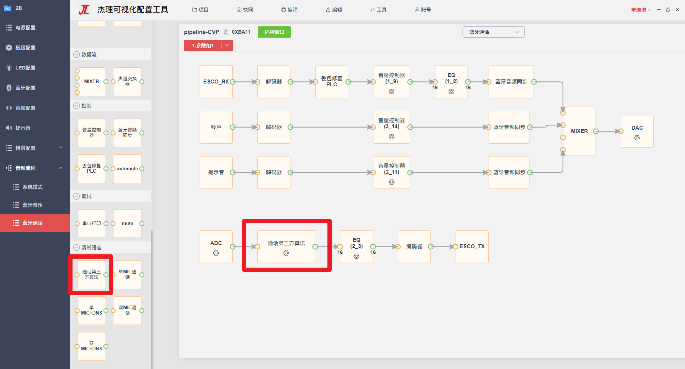
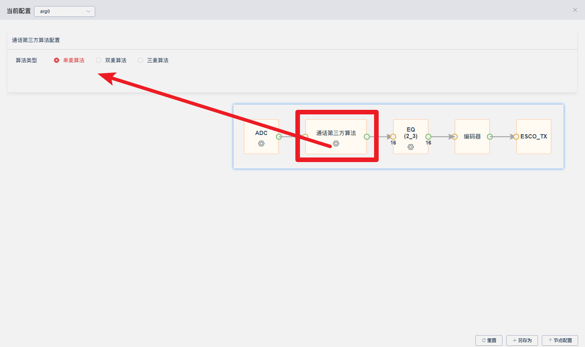
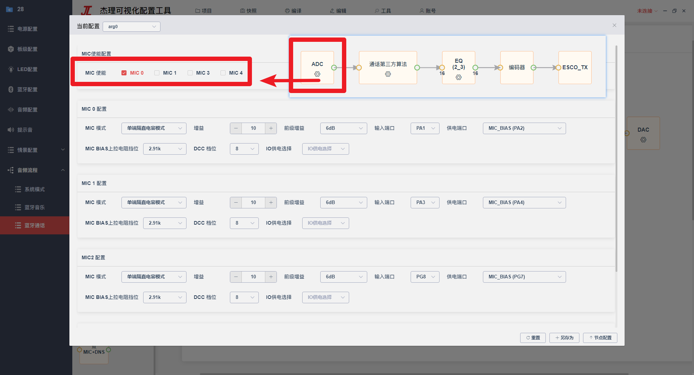

13.7.3. 通话算法集成
13.7.3.1. 功能介绍
本文档用来介绍如何集成开发第三方通话算法
13.7.3.2. 开发流程
13.7.3.2.1. 流程图配置
在侧边栏的
清晰语音选择通话第三方算法节点，根据方案在通话第三方算法节点配置中选择对应的算法类型
ADC节点配置中MIC使能，勾选与算法对应的MIC个数, 如上图选择的单麦算法，则MIC使能勾选一个原理图对应的MIC，双麦算法则需要在ADC节点勾选两个MIC使能，以此类推； 
13.7.3.2.2. 算法集成流程
算法开发位置
audio/CVP/audio_cvp_develop.c
算法初始化和退出
//算法初始化位置
audio_aec_init();
//算法退出释放资源位置
audio_aec_close();
算法运行
/*
*********************************************************************
* Audio AEC RUN
* Description: AEC数据处理核心
* Arguments : in Talk Mic采样数据
* inref FF Mic采样数据
* inref1 FB Mic采样数据
* ref speaker回采参考数据
* out 数据输出
* points 数据点数，单位short
* Return : 数据运算输出长度
* Note(s) : 在这里实现AEC_core
*********************************************************************
*/
static int audio_aec_run(s16 *in, s16 *inref, s16 *inref1, s16 *ref, s16 *out, u16 points)
{
...
/*TODO:这里调用第三方算法处理*/
//3rd_party_algo_run();
memcpy(out, in, (points << 1));
out_size = points << 1;
...
}